Script Outline
The script outline in order, with our best version of each thing underneath it. Orange boxes are where we do not have something solid yet.
Setup: Defense vs. Offense — McVay vs. MacDonald
McVay (offense)


For the movement section: nobody’s data counts motions (checked Sumer’s full schema; FTN flags presence only), so the closest honest quantification, and it is OUR measure built on Sumer’s alignment charting rather than a Sumer stat: how many different pre-snap looks a caller shows, from every skill player’s alignment across 4.8 million player-plays, and how much the look tips run vs pass beyond down, distance, score and clock. McVay’s answer organizes the whole segment: 32nd of 36 in look variety, 55% bunched sets against a league at 39%, and his looks tip the play more than anyone’s (1st of 36). Yet his motion is the one in the league that genuinely scrambles a pre-snap model (clearly real, not noise; only Shanahan’s also clears that bar, at a third the size). The formula: a few recurring shapes that would tip the play on their own, with players moving inside them until the tell is bought back. The movement is not many looks; it is life inside a few. Shanahan is the mirror: 3rd of 36 in variety, mid-pack at tipping, below-median motion effect, deception by menu instead.


And the sequencing rumor that arrived attached to Shanahan turns out to be McVay’s crown: he keeps the same personnel on back-to-back snaps 84% of the time, 1st of 37 (league 58%), with the longest streaks and the 4th-most play variety inside them; Shanahan is 28th, below league. Holding personnel until play identification breaks is the Rams’ method, and it completes the file: one look, held personnel, everything happening inside it.
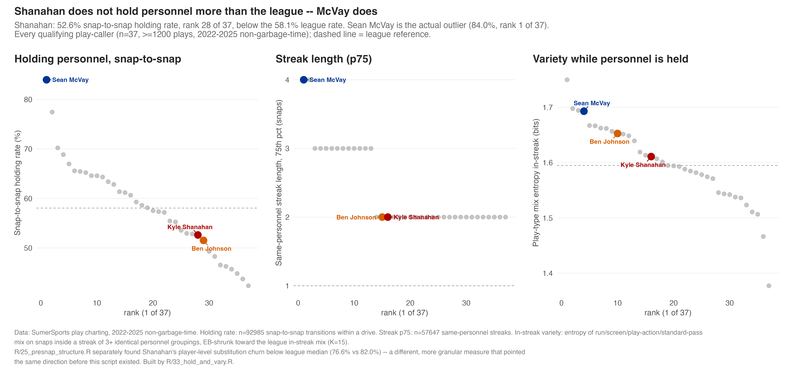
Players and coordinators are quoted saying he "makes 25 plays seem like 250." The four measurements above now live in one composite for the camera: 5th-fewest pictures, personnel held 84% (1st), 4th-most play variety inside the held stretches, and the biggest motion effect on run/pass guessability that is clearly real rather than noise. The twist to say out loud: his static pictures tip the play MORE than anyone’s; the disguise is what moves inside them, not the picture count.
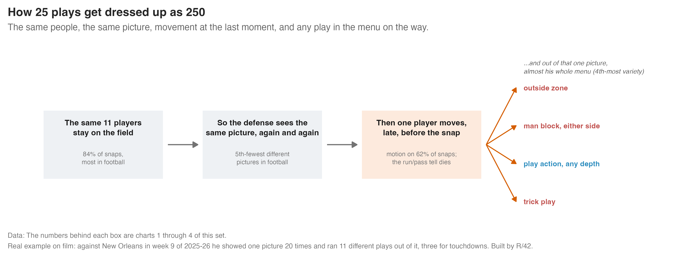
The "tips run vs pass" axis, explained on his own looks (the asked-for depth): out of 11 personnel, 3x2, shotgun he throws it 96% when the situation said 67%; every shotgun look throws more than expected (+6 to +29 points), every under-center look runs more (-4 to -19). Most of the tell is the quarterback’s feet. No model: league pass rate per down-and-distance bucket against his own calls.
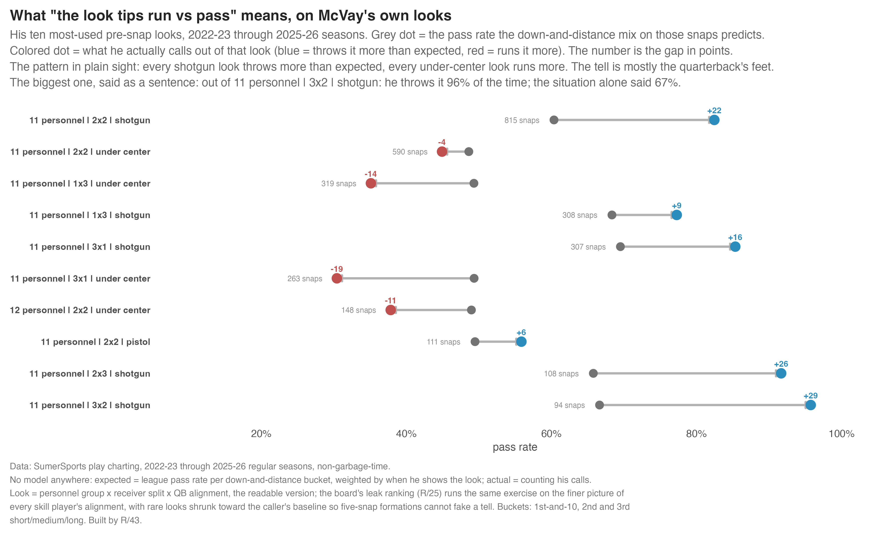
And the quote’s direct test, menu against wardrobe: McVay has the 3rd-smallest play menu of 36 (47 plays cover 80% of snaps, league 56) but ranks 27th in dressings per play: few plays, worn the same way. The static-wardrobe half of the folklore actually belongs to Ben Johnson (5th-smallest menu, 6th-biggest wardrobe). McVay’s 250 lives in the motion and the within-look play menu, not the outfit rack. Both axes are stable traits (r = +0.81 / +0.72).
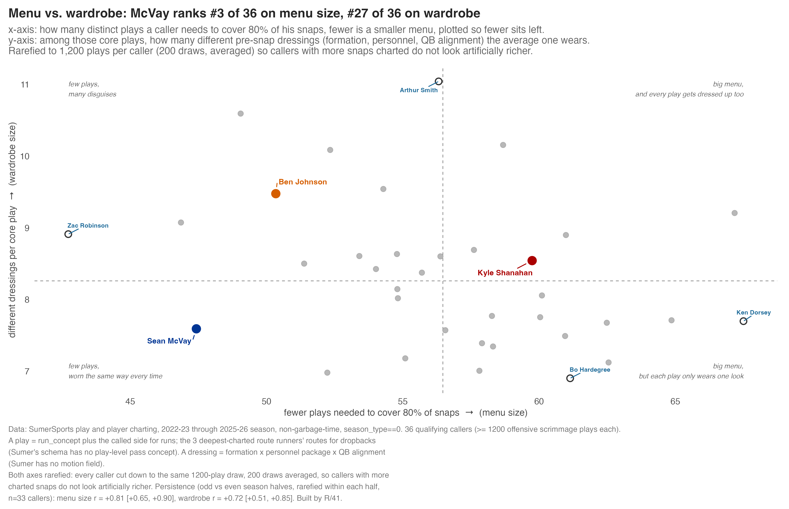
The single-game version, film-ready and from this past season: vs New Orleans, week 9 of 2025-26, he showed the same picture 20 times (13 personnel, 2x2, under center) and called 11 different plays out of it, three of them touchdowns; every snap is tabled with quarter and clock for clipping. The biggest example if an older game is fine: at Seattle, week 13 of 2022-23, 28 snaps, 15 plays. He motions on 62% of snaps (4th of 37, league median 46%), so the motion-effect comparison is his own other 38%.
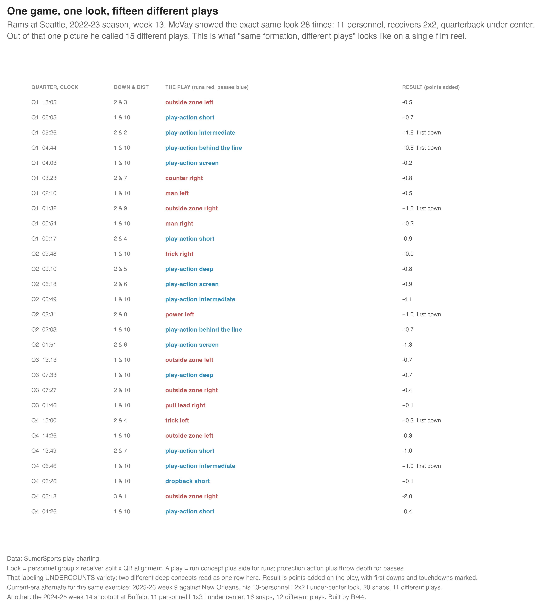
And the direct test of "hard to predict," after pushback that run/pass is too reductive: guess the actual play (concept and side, or routes and depth), knowing the look and the situation, never using the snap being guessed, everyone on the same 1,200 plays. McVay comes out 33rd of 36 from hardest: one of the easiest callers in football to guess, confirmed with a second independent play definition. The film feels unpredictable because of what surrounds the play, not because the play is hard to name. The full arc in one sentence: third-smallest menu, most-held personnel, leakiest looks, guessable plays, elite anyway; being hard to guess is not what makes him good. The deception stories live elsewhere: for Shanahan a defense guesses the play better BEFORE he lines up than after (3rd-biggest backfire in football; Johnson’s look backfires too), and the mechanism is menu volume: each of his many looks is too rare to learn from.
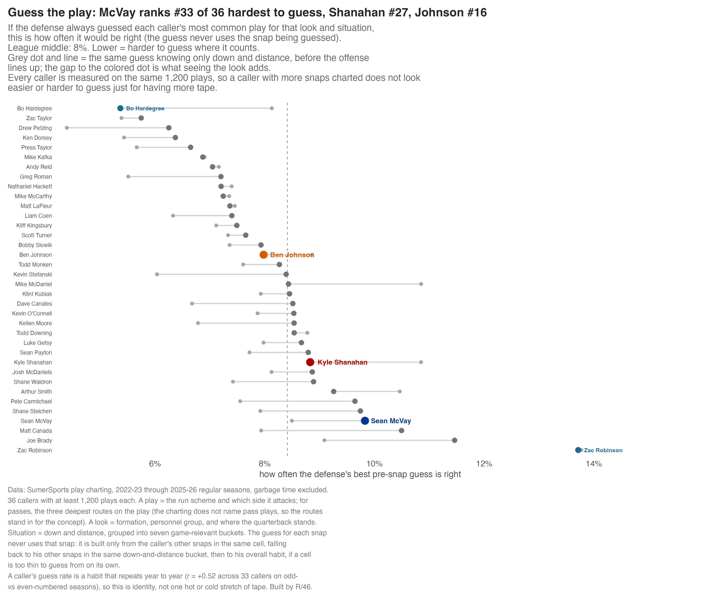
His pistol experiment, from the alignment charting: none charted in 2022-23, then 7.7% of snaps in 2023-24 (league 4.3%) and 10.6% in 2024-25 (league 5.8%), roughly double the league both years, then abandoned this past season (0.7%) in the same offseason as the 13-personnel pivot. Against Seattle specifically it barely appeared (0/4/2/0 snaps across the four meetings).
MacDonald (defense)


The HOW, from the never-used pressure flags: Macdonald ranks #2 of 41 coordinators at manufacturing unblocked rushers (above what his situations predict) while ranking 24th at winning one-on-ones and 26th in blitz rate. A free rusher costs the offense about 3x a won rush (-0.50 vs -0.16 EPA), and a won block only converts to pressure 62% of the time anyway. His pressure is scheme, not volume and not talent. Honest limit: free-rusher manufacturing does not confirm as a league-wide repeatable trait (r = 0.02), though his own rate has risen all four seasons.

Michael: "Where did the Hawks rank in all that?" One ledger: at or near first at beating every roster meter (1st above pedigree, 1st above payroll, 2nd above Madden, 3rd against the market; Macdonald’s career market rate 3rd of 157), scheme-pressure elite while blitzing bottom-third, and honestly mid-pack at exactly one thing, halftime adjustment.

The Seattle defense read, checked claim by claim: nickel confirmed (73.6%, 5th of 32; 2nd in 2025-26), low blitz confirmed (11th-fewest, same rank at Baltimore), explosives confirmed (4th-fewest allowed; 27th both years before he arrived), zone honestly mixed (dead-average pooled, above average only in 2025-26, shell variety rather than one look). The standout: Seattle allowed the least EPA per blitz in the NFL across his two Seattle seasons pooled, and the mechanism closes exactly: 1 in 4 of his blitzes springs an unblocked rusher (45% above league), those plays run about -1.0 EPA for the offense, and the other three quarters are ordinary. The blitz is not the weapon; the free rusher inside it is.
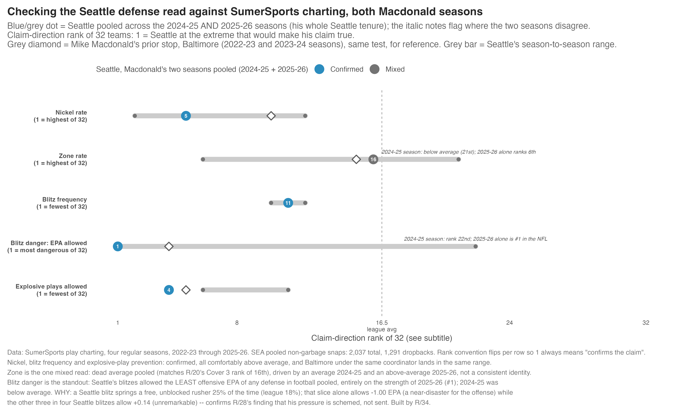
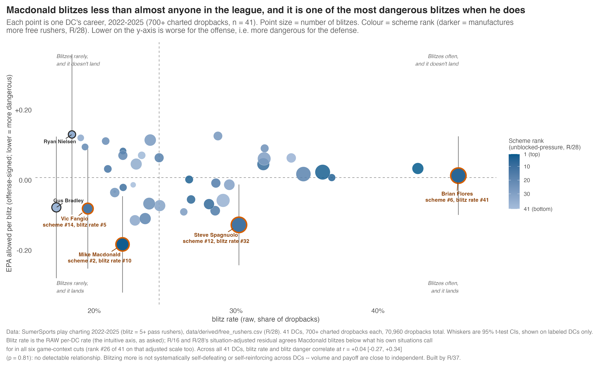
Have coordinators decreased in age? How much? Offense? Defense?

The Seahawks defense struggled against the Rams, but their offense shredded them

Coaching vs. the roster
What leaves with the coach, and what stays
This is the question underneath the whole video. Take every team-season and the one after it, split the pairs by whether the same man was still calling plays, and see what survives. Scheme belongs to a man. Tempo predicts itself at 0.94 when the caller stays and -0.03 when he leaves. Five-plus rushers 0.83 to 0.05. Cover 3 0.74 to -0.03. Average drop across eight scheme measures is 0.63. Results belong to the building. Sack rate moves 0.06, and offensive EPA is more stable when the caller changes.
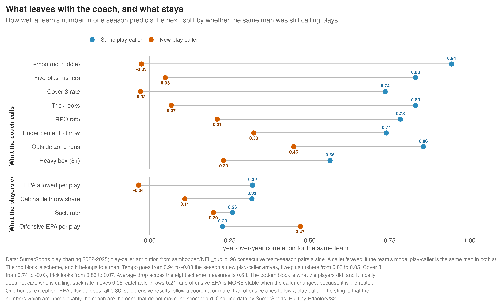
Michael: "it certainly feels like there’s an argument that they are the second most valuable person on the roster behind QB… a WAR of 3-4 for the outlier guys." Three rulers say the ladder runs the other way: the stricter the control, the smaller the coach. Against draft pedigree the outliers do reach 3-4 wins. Against real payroll the ceiling is under 3. Against the closing spread, which prices the coach every week, the sustained elite tier is about one win a season. McVay, Shanahan and Macdonald never clear +1.7 on any ruler, and Shanahan’s career market number is slightly negative.

Audit of our own top ruler: Belichick’s +4.2 there is mostly Brady wearing a pick-199 price tag. Split the eras: with Brady +4.9; post-Brady (29-38) +0.5, or slightly negative once the QB is priced by his actual play, at or below the +1.01 market floor. Carroll/Wilson, Payton/Brees and Garrett/Romo shrink the same way. The loosest ruler hands coaches their quarterback’s outperformance of his draft slot.

The entanglement itself, attacked directly with Sumer’s per-play player grades: score every play by how its players grade on their OTHER plays (the same-play grade is outcome-contaminated 11x over and was rejected), and each caller splits into execution (his players play well) and design (EPA left over after situation and execution). Shanahan: execution #2, design #5. Ben Johnson: #5 and #3. Both elite twice over, the data’s answer to "it’s just the talent." McVay: league median on both, his value lives elsewhere on this board.

Personnel
What 11 and 13 personnel are, and who uses them

What Sean McVay did
How does this do against lighter boxes?

Michael, on the Rams: "They were fucking nuts out of 13 personal. .50 EPA passing, .07 EPA per play running my god." Both numbers verified inside our intervals. The sharper version for the script: defenses stack the box against the Rams’ 13 personnel 72% of the time, and that is the exact look it beats. Passing +0.37 into a stacked box against a league at +0.03, running break-even where the league gets stuffed, and those are the only two splits that clear significance.


His follow-up: "everyone else kinda sucked at this while the Rams were insane. So what were they doing out of it?" A different playbook: man/gap run blocking at 40.6% vs the league’s 17.7%, zero power runs all season, 89% under center, play action faking inside zone at four times the league rate, and more deep shots from a personnel the league treats as run-first. And "wtf does Kyle do": he does not play 13 at all (eight snaps). His heavy is 21 with the fullback, from which he throws MORE than the league and play-fakes less. Two opposite routes to heavy.


The Hudl article behind this thread, fact-checked against its own 2023 season: the personnel core confirms exactly (second-lowest 11, first in 21+22, shotgun avoidance, and the bullseye: SF really was the number one run-look team). Four claims fail, including tight-ends-attached running backwards (SF flexes its tight ends off the line at one of the highest rates in football) and "tied narrowest with the Rams" holding for McVay alone, who genuinely is #1 in condensed looks.
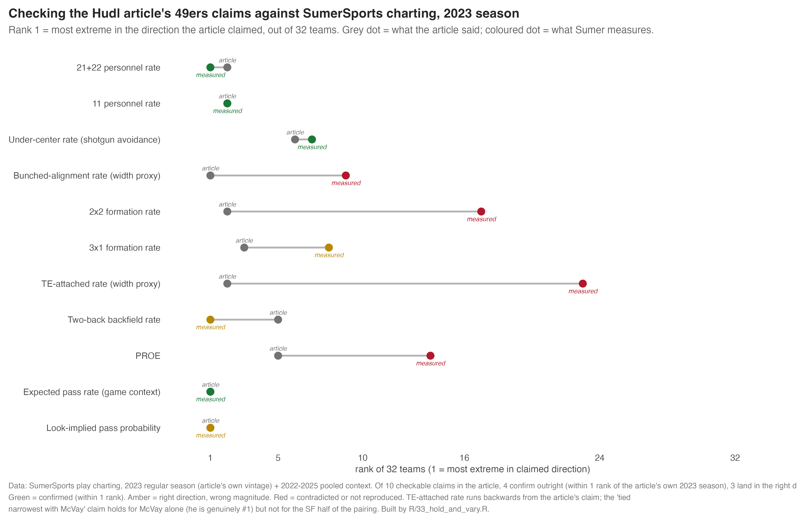
Is play action more effective out of 13 personnel?

Run vs. Pass


What a coin-flip high-leverage play is
Two things have to be true at once. High leverage means the game is still live, with win probability between 36% and 64%. That is the top quarter of all snaps by how much a single play can swing the result. Coin flip means the situation gives the defense nothing, with the model landing between 50 and 60% on run or pass. It knows down, distance, field position, score and clock, and it does not know who is playing. The two together are 10.6% of all called plays, and the typical one is 1st and 10 near midfield in a one-score game.
One thing to say carefully on camera. High leverage here means a close game, not a late one. Leverage peaks when a game is even and games are most even at the start, so 36% of the high-leverage bucket is the first quarter and only 14% is the fourth. That is why several of the examples below are tied in the first quarter.


When is it worth being unpredictable?
How to read the next chart. The model gives every snap a run/pass probability from the situation alone. How far that number sits from 50/50 is how obvious the call was, and the league splits into roughly even thirds: coin flip at 50 to 60% sure, leaning at 60 to 80%, obvious at 80% or more. Within each third, compare the plays where the caller did the expected thing against the plays where he did not. On obvious calls, going against the situation costs 0.04 EPA a play. On coin flips it gains 0.09. The book is right on the easy hands, and the game is what you do on the hard ones.


Michael: "Predictability is U-shaped. You don’t want to be at the extremes… if you are too unpredictable, then the narrative does not make sense… but if you’re too predictable, the other team will gain an edge on you." Tested three ways, and the U is not there: offense is monotonic (more guessable tracks better offense the whole way, quadratic and GAM both collapse to a line), defense is flat. What replaces it is better for the script: structure is universal among the elite, and there are two roads through it. McVay and Shanahan are elite while being guessable. Ben Johnson is the league’s one case of maximum identity that opponents still cannot cash.


Is the coach a coin flip, or only the situation?
The model calls a spot 50/50 because that is what the league does there. A defensive coordinator is preparing for one man, not the league, so the question worth asking is what each caller does in those same spots. Mostly they are. 21 of 31 callers sit within five points of a true 50/50, and the whole field spans 39% to 57%. Second down is where coordinators go looking for a tendency, and that is where the differences show up.


4th Downs
How do coaches look here?
Every fourth-down chart on this page is credited to the head coach, not the play-caller. That is why Mike Macdonald appears on them even though he calls the defense. The head coach has the final say on whether to go, and it lands on him when it fails.

Old coaches against young coaches

Coaches will punt when they should go for it, but not the other way around


Nick: "Probably need a cowardly coach leaderboard. And a brave coach leaderboard." Both built, era-adjusted with intervals. One reliability note that matters: this go-or-kick rate repeats at r = 0.76 split-half, comfortably above the project’s trait bar, unlike the dollar-cost ledger above it. Josh McDaniels, for the animator: middling on clear-cut fourth downs, but in the razor-thin band where nerve actually shows he went for it once in seventeen chances.


Michael: "Do we have anything on 2Pt conversions? Going for 2." Built, with a twist: the quadrant Nick predicted would be empty (brave on fourth down, conservative on two-point tries) holds 28% of the league, Reid, Campbell, LaFleur and McDermott included, and the correlation between the two braveries is r = 0.10 with an interval spanning zero. Two beats for the script: coaches obey the go-for-2 card 99.6% of the time in the fourth quarter and 48.6% before it, a late-game religion and an early-game suggestion. And two-point chances are so rare that two-point aggressiveness fails its own reliability test as a coaching trait, while the fourth-down version passes easily. One is a trait, the other is a coin flipped a few times a year.

Is anyone clutch?
Michael asked whether some coaches dial it up better than others when it matters. Measured against each caller’s own baseline, the gaps are there but they do not survive a noise test: only 23% of the spread in close-game performance is real, against 79% when the same test is run on overall play-calling quality. A caller’s close-game lift in one set of seasons predicts his lift in the other at r = +0.05. Someone tops this table every year and it is a different someone each time.

What play-callers have success in the red zone?

Where the nerve goes, and whether it is earned
Michael: "I bet on like 4th and 5 or something teams are wayyyy less likely to go for it if it is close? Those more iffy go-for-it situations, I bet we see a huge falloff." Right about the shape. On 4th and 5 where the book says go, teams go 12% of the time. On 4th and 6, 8%. On 4th and 1, 61%. And in close games the go rate is lower in every single band.
The follow-up was whether conversions get worse under pressure, which would make the caution justified. They do not. Teams convert 62.2% in close games against 58.6% everywhere else, a difference of +3.5 points (p = 0.09) in the wrong direction for that argument. The caution is the coach, not the down.

What the decisions cost


Running on early downs
Where can play-calling obviously be improved?
Michael asked where the obvious improvements are. The story is the scale gap. Fourth down is the leak the internet argues about and it comes up about half a time per team per game. Running on early downs in spots where passing clearly wins comes up 16 times a game. Thirty times the volume, a fraction of the attention.

Teams are still doing this too much

Which play-callers are best and worst at it?

Adaptability
First half vs second half adjustments

Adapting to the players you have
Kyle Shanahan and Ben Johnson
Michael: "What ways do you think Schnahan adapted in 2025?" Measurably, he did not, and that is the finding: across a nine-metric scheme fingerprint, all three of his season-to-season transitions sit in the 4th to 17th percentile of league drift for coaches who kept their jobs. McVay’s 11-to-13 pivot sits at the 98th. Shanahan’s stability is the signature; the scheme is plug and play and 2025 was the same plug.

Michael: "What is our story on Schnahan? What makes him special?" Both his examples verified: McCaffrey out-targeted the actual WR1 by 46% (143 targets, 1,029 yards), and Mac Jones vs Purdy 2025 is statistically indistinguishable (EPA/dropback +0.009 in Jones’s favor, p = 0.94, on 334 vs 363 dropbacks; one backup season, suggestive not proof). The assembled dossier: players grade #2 AND design adds #5 (both, not either), picture variety #3 (deception by menu), scheme drift 4th-17th percentile (a complete system does not need to adapt), 69% extra-blocker heavy runs, top five at making coin-flip surprises pay, and a slightly negative career number against the market because the market already knows. The Jones season is the system’s proof: the QB changed and the offense did not notice.

The Kyle file, three mechanical signatures from the last unmined Sumer fields: (1) the YAC factory: +0.76 yards after the catch per completion beyond what throw depth and situation predict, 1st of 37, at a dead-ordinary throw depth (16th), so it is engineered, not checkdowns; Ben Johnson 3rd, McVay 11th. (2) the inverted run game: 46% outside zone (3rd) vs McVay’s 50% man blocking; the bounce-to-the-other-side folklore tested null for everyone, but his zone runs scatter across more gaps than anyone’s. (3) the mismatch machine: McCaffrey is covered by a linebacker or safety 81% of the time, like an ordinary back (82%) and nothing like SF’s receivers (34%), while carrying WR1 volume; hunting that coverage pays at every depth league-wide, and the callers rank Johnson 1st, Shanahan 5th, McVay 37th.
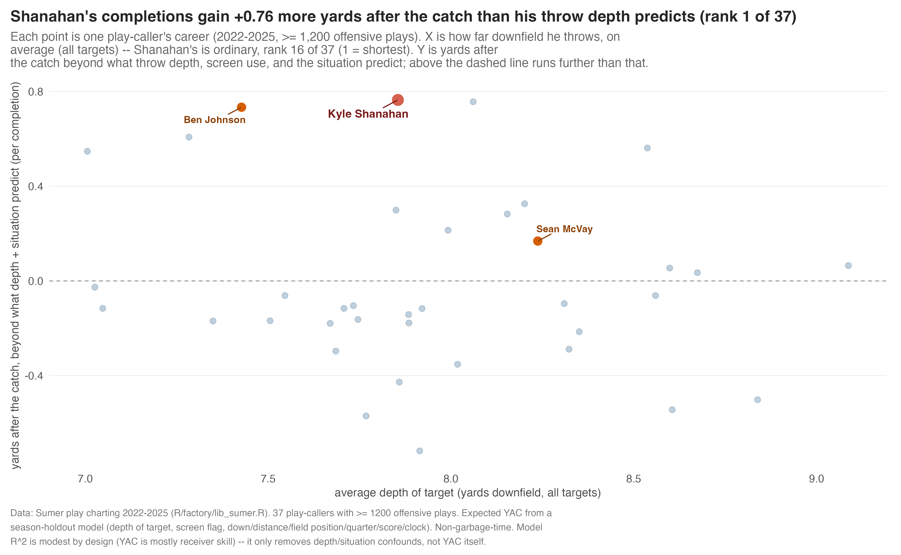
And what the factory runs on, split at first contact using Sumer’s yards-after-contact charting: Shanahan’s +0.76 is 73% broken tackles (+0.56 after contact, 1st of 37, the cleanest interval on the board) and only +0.20 before contact (5th, interval crossing zero) — the engine is Deebo Samuel (10th of 265 players in tackles beaten per catch), McCaffrey, Kittle and Jennings, who carry half the contact edge. The scheme-space crown is Ben Johnson’s: 1st of 37 on the before-contact channel, a genuine 50/50 split, spread across 19 players. The two channels correlate at only r = 0.60 across callers: creating space and rostering tackle-breakers are different jobs. The split reconciles exactly to the shipped +0.76.
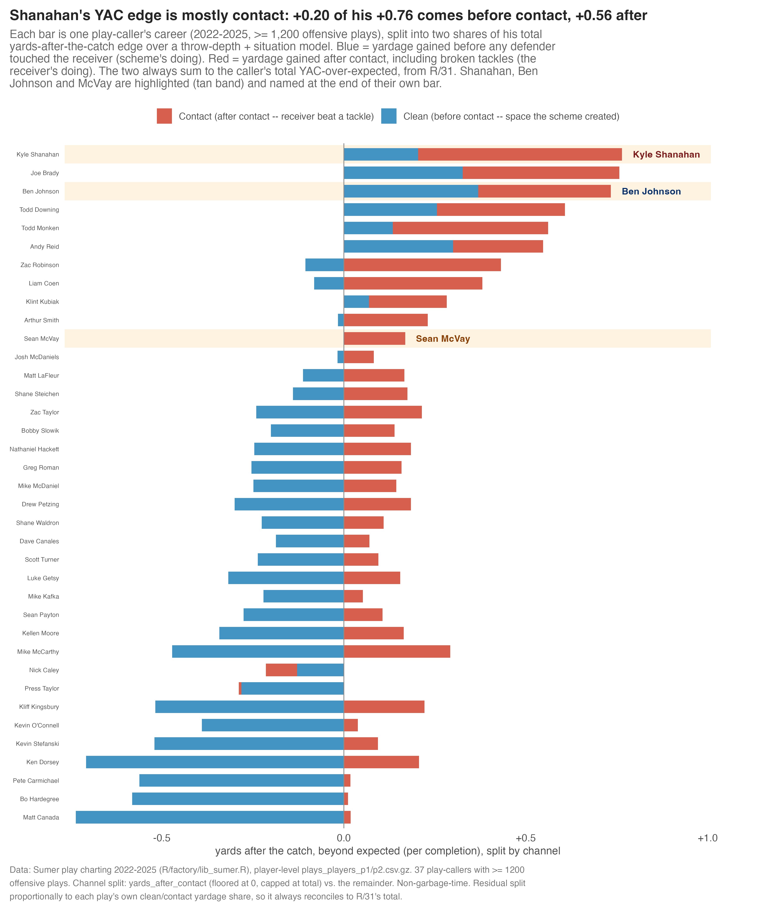
The bootleg folklore, tested against the dropback-type charting: "boot off wide zone" does not exist at the caller level (outside-zone rate vs rollout rate, r = −0.01 across 37 callers), and Shanahan is his own counterexample: 39.9% outside zone, one of the league’s highest, with a below-median 6.9% rollout rate. Situation-adjusted movement volume: McVay 4th of 37, Johnson 20th, Shanahan 26th, LaFleur 32nd — but all four sit above the median payoff on the rollouts they do call. The tree’s signature is effectiveness, not volume. League-wide, the play fake is what pays (a rollout without it costs −0.22 EPA a play); movement’s one distinct benefit is sacks, roughly halved (3.9–4.0% vs 6.1–6.6%) while pressure barely moves. Usage persists at r = +0.76, among the strongest traits measured.
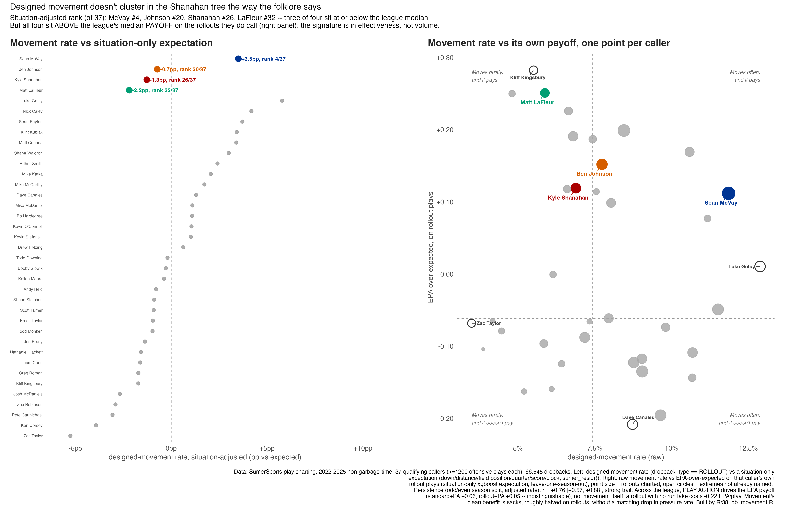
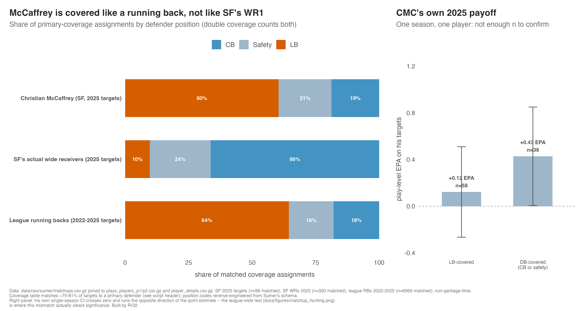
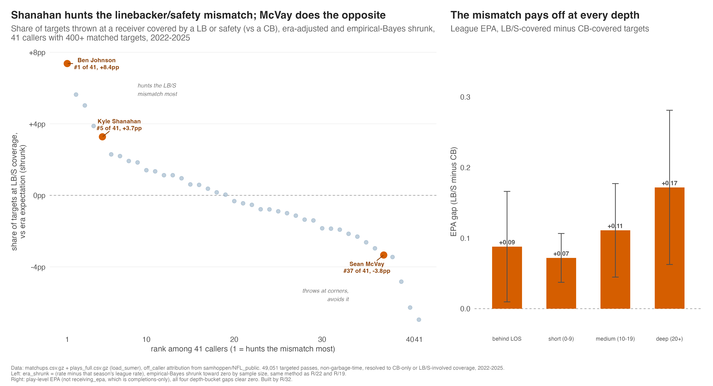
Two follow-ups, both answered: "guys are always wide open" partially holds and is strongest recently: Shanahan is above the league median on both openness proxies (contested-target rate, completions over what depth and situation predict) but top-third on neither career-wide; in the last three seasons his completions-over-expected sharpens to 9th of 47 (+3pp), and Purdy (+4.7pp) vs Jones (+3.9pp) are statistically identical on it: the easy throws belong to the system. And mismatches are their own category: hunting the LB/S matchup and cashing it are uncorrelated skills across 41 callers; Shanahan does both (5th and 8th), Johnson hunts most but converts at league average, McVay avoids it and converts it worst.
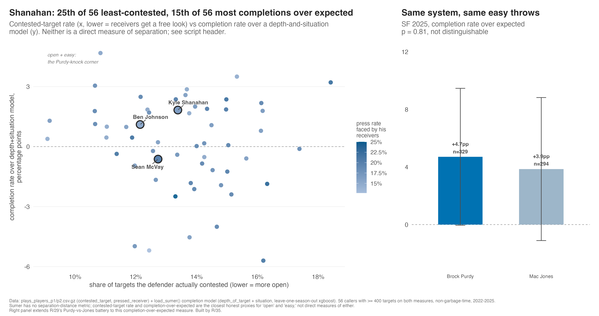
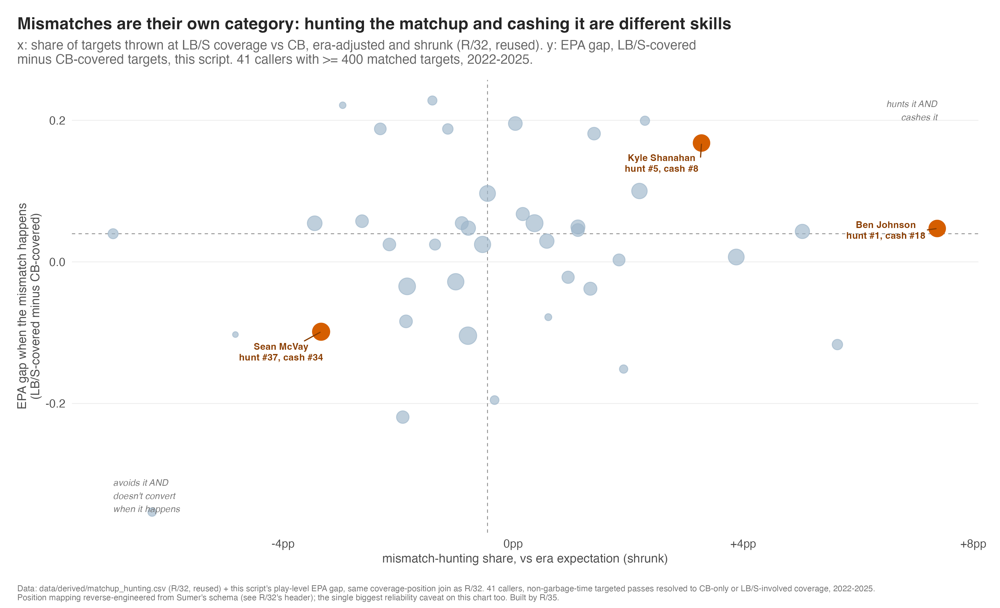


Coach fingerprints
What each man actually calls
From the SumerSports charting. 216,857 plays and 193 fields, mined for coach-level traits and then re-checked by a second pass trying to break them. Twenty-seven measures survived. Read a coach across to see who he is, or a column down to see who is extreme at one thing. The number in each cell is his own rate; the color is where that sits in the league.
These are plain rates, not situation-adjusted ones, and that is deliberate. Adjusting for down, distance, score and clock moves every number in these grids by a fraction of a point, because the situation does not predict which concept a man calls. The adjustment stays where it earns its keep: run/pass, blitz rate, shell rotation.
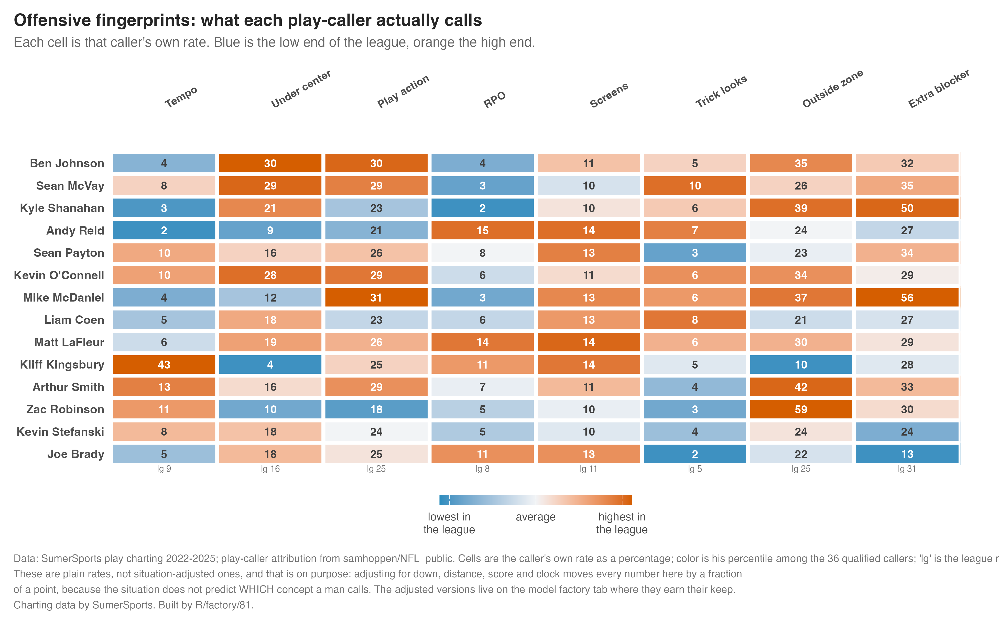
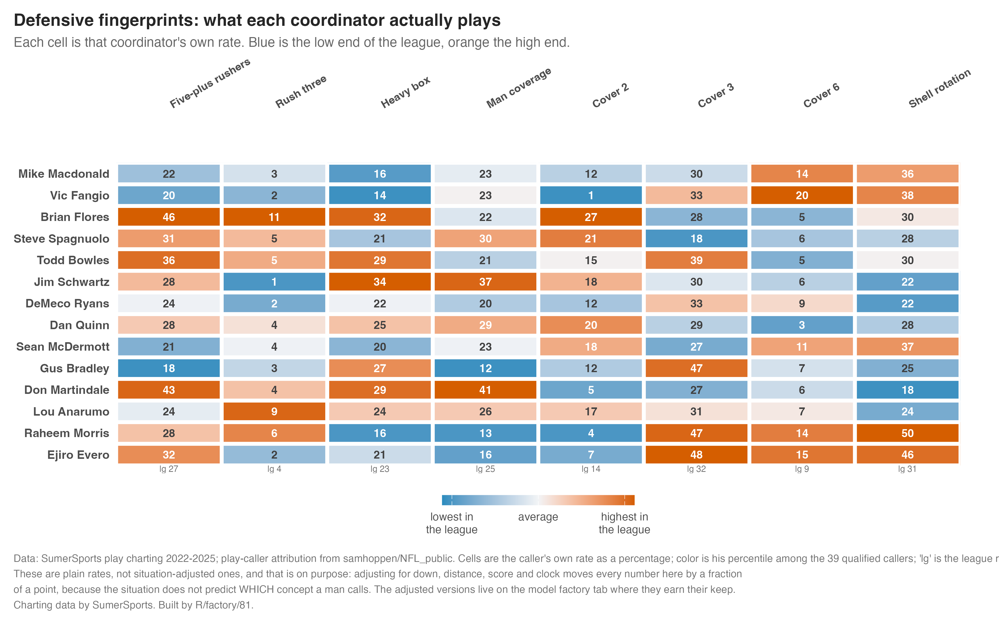
Coach by coach
Ben Johnson (Detroit 2022-24, Chicago 2025). The most under-center passer in football, 30% against a league 16%, with heavy outside zone, almost no RPO and the slowest tempo of anyone in this group. The whole offense moved to Chicago intact. Under center 38% in his last Detroit season and 28% in his first Chicago one. Outside zone 43% then 37%. RPO 4.4% then 4.0%. Tempo 3.9% then 4.2%. New building, new quarterback, same offense.
Sean McVay (Rams). A narrow run menu behind a lot of window dressing. Trick looks on 10.3% of snaps, double the league and 4th of 36. Under center on 28.9% of dropbacks. Almost no RPO at 3.0%. And the box in front of him gives a defense less to read than almost anyone else’s.
Kyle Shanahan (49ers). Half his runs have a fullback, H-back or tight end leading the way, 49.7% against a league 31%. That, more than the outside zone he is known for, is the signature. He also runs the fewest RPOs of any caller in the league at 1.5%, and the second-slowest tempo at 2.7%.
Andy Reid (Chiefs). The slowest offense in football at 1.7% no-huddle, last of 36, all four seasons. Shotgun nearly always, under center on 9.1% of dropbacks. His signature is the RPO at 14.5%, close to double the league. The charting says shotgun RPO offense that always huddles.
Sean Payton (Denver). Shows the plainest pre-snap look on this list, with trick looks on 2.8% of snaps. He plays fast for a veteran at 10.3% no-huddle and runs behind an extra blocker more than most at 33.7%.
Mike Macdonald (Baltimore 2022-23, Seattle 2024-25). A quiet front and a wide menu. He sends five or more on 22% of dropbacks against a league 27%, below average in all four seasons at two clubs, and keeps light boxes at 16% against 23%. The movement comes after the snap: his shell rotates on 33% to 39% of snaps, every year, at both teams.
Vic Fangio (Miami 2023, Philadelphia 2024-25). The most extreme coverage fingerprint in the data. He has all but deleted Cover 2, playing it on 1.2%, 0.7% and 2.6% of dropbacks across three seasons at two clubs, against a league 14%. He replaced it with split-field Cover 6 at about 20% against a league 9%. He barely blitzes and keeps the lightest boxes on the board.
What not to say about any of them. None of this predicts winning. Not one of the coverage measures relates to points allowed. Blitzing more correlates with EPA allowed at -0.14 (p = 0.37). RPO rate is worth -0.017 EPA a play. Trick looks, +0.017. The offensive number that best predicts scoring is the share of throws that are catchable, and that one is not a coach trait at all, repeating across seasons at -0.10. What is unmistakably the coach does not move the scoreboard; what moves the scoreboard is the quarterback.
The pre-snap ledger: discipline and cadence
The full penalty log, opened for the first time (it required bypassing the loader, which silently drops essentially every pre-snap penalty because a false start is by definition a play that never happened). Two findings. Discipline tracks winning but does not behave like a skill: pre-snap offensive penalties correlate with point differential at r = −0.43, and the leaderboard passes the eye test (Dan Campbell cleanest, Daboll worst), but the same coach’s rate barely repeats across seasons (r = +0.15, interval spanning zero) — a symptom of good teams, not a trait you can hire. The cadence weapon looks closer to real: defensive pre-snap flags drawn persist at r = +0.31 and pay in real currency — Zac Taylor leads the league at about 86 free yards and 6.5 free first downs a season. McVay is the only coach in the top three of both lists: third-fewest committed, third-most drawn. League pre-snap penalty rate rose 31% from 2022 to 2024 with no rule change, so everything is measured against its own season.
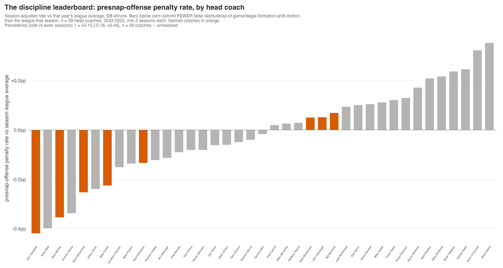
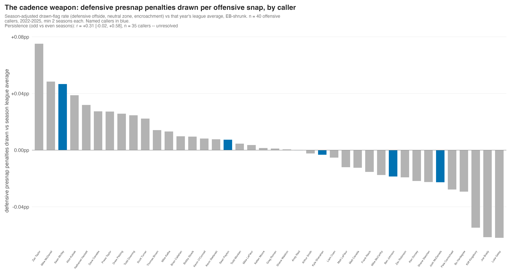
The play everyone agrees works, that nobody runs
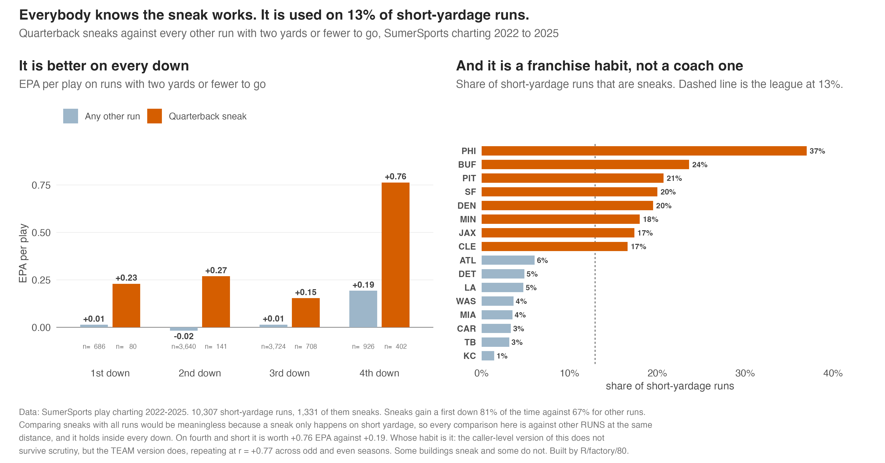
Disguise (offense and defense)
Same look, different play
This is the one that worked. For every caller and every look he uses (formation crossed with personnel), compare what he actually called against what the situation alone predicted. That isolates what the look gives away on top of the down, distance, score and clock the defense already knows. Every gap is shrunk by its own standard error first, which is the step the earlier pre-snap chart was missing.

Static before the snap, moving after it
Michael: "I think the Seahawks defense was very predictable in terms of formation. They ran Nickel like the whole time and did not give af what the offense was doing. But their unpredictability came when the ball was snapped." Both halves check out, and they are close to independent measures (r = -0.17), so this is a real two-axis idea.

Defense: showing one coverage and playing another
This is the defensive half, and it comes from SumerSports charting, which records the middle-of-field shell both before the snap and as actually played. The shell rotates on 30% of charted snaps. Showing two-high and dropping to one is the common lie; the reverse is about a third as frequent.
The two yellow dots are the safeties. Everything else holds still, which is the point: the front seven can look identical on every snap while the back end changes what it is. Sumer charts the middle of the field twice, once as it looked before the snap and once as it was played, and those two disagree on 30% of charted snaps. Mike Macdonald rotates 5.7 points more often than his situations call for.

Here is the harder test, and it says this is the man rather than the building. Sumer only covers four seasons, so most coordinators never change club inside it, and a split-half test alone could just be measuring the same roster and secondary. Across the 11 coordinators who did move, the rotation tendency travels with them: r = +0.79 [0.36, 0.94], p = 0.004, against +0.82 for those who stayed put.
Worth saying carefully on camera: rotating more does not mean allowing less. Across coordinators, rotation above expected and EPA allowed correlate at r = +0.22 (p = 0.16). This measures a style that is unmistakably real and repeatable, not one that is proven to work.
Michael: "I wonder if post snap movement out of shell has increased over time…my guess is yes." Right: 29.1% of dropbacks in 2022 to 32.3% in 2025, rising 1.2 points a season (a climb too steady to be noise), and the charting’s missing-shell rate is under 1.1% and stable, so it is not a labeling artifact.

His follow-up: "Also curious if EPA is down on plays where there is a rotation post-snap. That’d tell us if it’s worth it." The honest answer is not provably: controlling for the situation, rotated snaps cost the offense 0.01 EPA a play with an interval that spans zero, and every split (man, zone, blitz, no blitz) also spans zero. Rotation is free, not proven profitable. Its value, if real, is not visible in aggregate EPA.
And the mental-tax mechanism itself, tested on the clock (his theory is about time, so we used Sumer’s never-touched time_to_throw and time_to_pressure): zero of seven QB outcomes move once play design is controlled, pressure actually arrives slightly faster on rotated snaps, and the sharpest prediction, that play action should carry the biggest tax with the QB’s back turned, runs confidently backwards (the gap is smaller under play action, p = 0.0003). A 30-60 millisecond echo exists against man coverage and blitzes and cashes out in nothing. The camera should love rotation; the scoreboard and the stopwatch shrug.

Asked directly whether the EPA stuff on safety rotation was double-checked: it is now QUADRUPLE-checked. The fourth cut, coordinator by coordinator (in case rotation only pays for the men who are good at it): 43 coordinators tested, 2 clear the 95% bar, and 2.1 would clear it by luck alone, one in each direction. Macdonald leans the right way (-0.09) with an interval spanning zero. Nobody’s rotation provably pays.
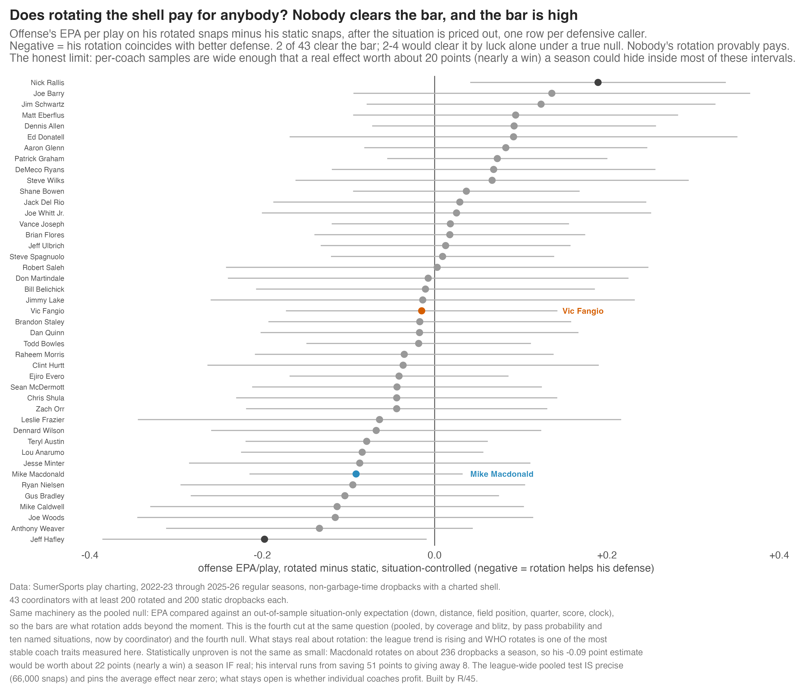
And the last door, closed: does the rotation effect hide anywhere the pooled test cannot see? Split by pre-snap pass probability (no gradient, interaction p = 0.82) and hunted through ten named situations (third-and-long, red zone, two-minute, late-and-close, first-and-10, play action, man, zone, blitz, no-blitz): zero of fifteen screened cells confirm against 0.75 expected by chance. Rotation’s trilogy: no points, no clock, no hidden pocket. What remains real is identity: the trend rises and who rotates persists at r = 0.91.
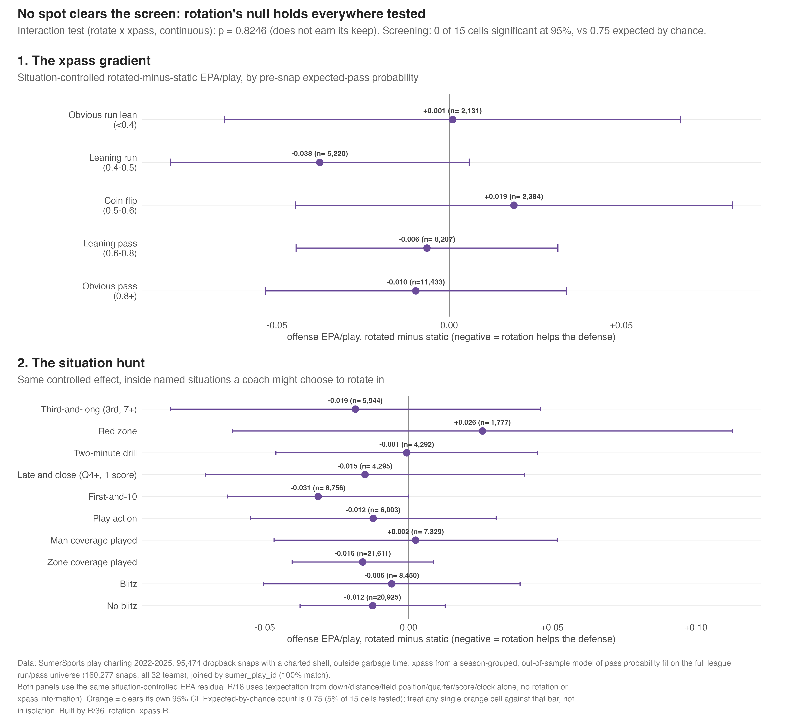

For the film reel: Macdonald’s ten worst-for-the-offense rotated snaps are tabled in the repo with date, quarter and clock (data/derived/macdonald_reel.csv). The top three: the Week 10 2025 sack-fumble against Arizona (Q1 09:32, closed shown, open played), the Week 10 2023 pick-six against Cleveland (Q1 14:26, open shown, closed played), and a second Arizona sack-fumble that same 2025 game. Number five on the list is the Super Bowl interception of Drake Maye (Q4 08:49, open shown, closed played), verified against nflverse: Seattle 29, New England 13.
Michael’s outside numbers on Seattle, checked stat by stat: they show two-high on 85.5% of dropbacks (2025-26 season), second in the league behind Philadelphia, not first, and his league average runs ten points low (different charting source). Cover 3 is 16th, not 31st. The by-season view is the Macdonald effect in one line: league-average 59-61% show rate under the previous staff, 77.5% (5th) the season he arrived, 85.5% (2nd) in year two, while the league line barely moved. The keeper stat the check uncovered: they show two-high at 85.5% and play it at 56.2%, a 29-point spin-down, sixth-most rotation in football. Seattle advertises two-high and then leaves.

Where the rest of this stands
Sequencing is still open, and the older pre-snap tell chart below is superseded by the two above. Research ideas at the bottom for the group to pick from.

Research ideas to discuss
- Motion at the snap versus motion before it. FTN flags motion but not whether the man was still moving at the snap. Split those and the deception question gets sharper, because only one of them actually moves a defender late.
- Formation variety per caller. How many distinct formation and personnel combinations does a caller use, and does a wider menu buy anything? Entropy over the look distribution, same method as the predictability work.
- Same look, different play. Built, and it is now the chart at the top of this section.
- Late motion and defensive response. Participation data has the defensive personnel on the field. If the defense substitutes or changes shell after motion, that is deception working. Needs care but the fields exist.
- Cadence and hard counts. Built (R/39), and it is now the pre-snap ledger section under Coach fingerprints: drawn flags persist at r = +0.31 and Zac Taylor’s cadence is worth about 86 free yards a season.
- Play-action after a run versus after a pass. Built (R/14): the league’s play action is if anything slightly better cold than after a successful run, and Ben Johnson’s own split is indistinguishable from zero. The fake does not need the run.
Sequencing
Play action: rate, and what the situation expected


Does running set up the play-action pass?


Still to do: a literature check on what is already published on sequencing, so we are not re-deriving something or contradicting a known result without knowing it. Worth asking Paganetti directly, since this is his area.
Play Action
Everything on play action in one place